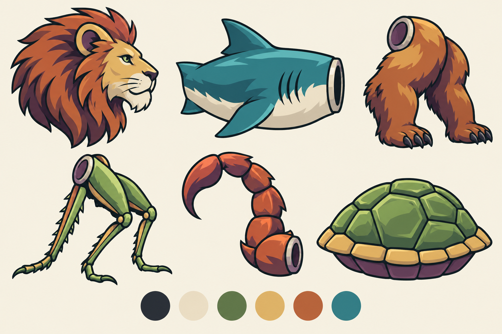
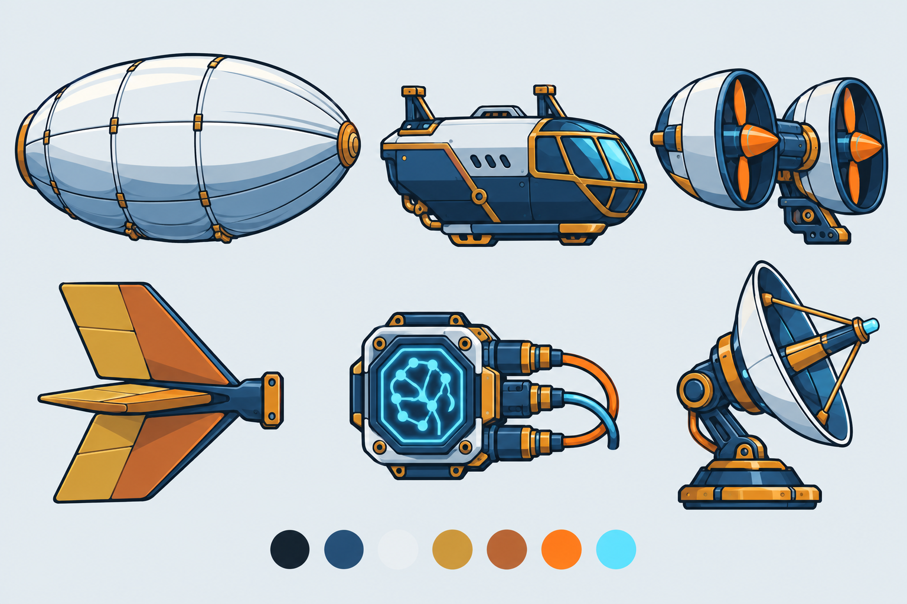
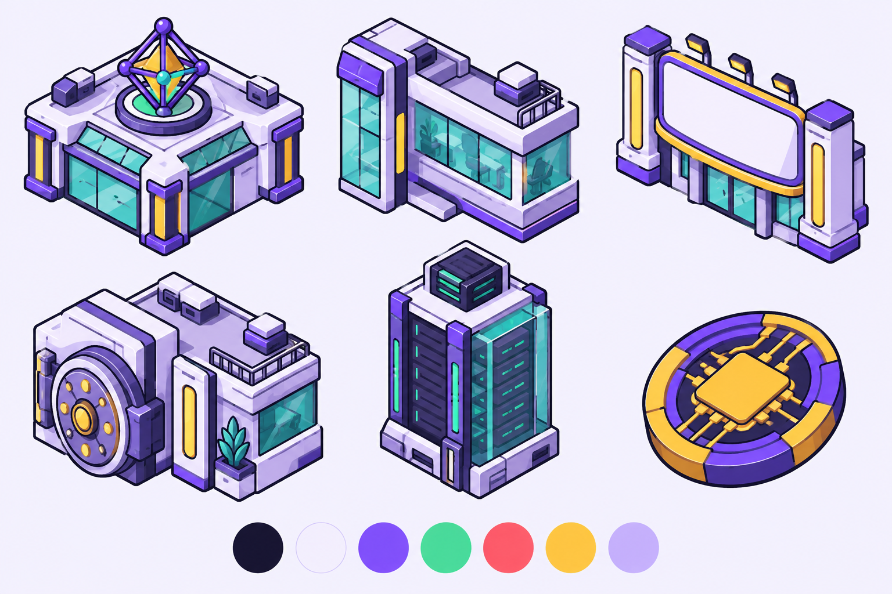

НейроФауна · Полевой бестиарий
Мох, песок, ржавчина и бирюза. Массивные силуэты, спокойный научный характер.
Три эталона стиля для согласования. Это референсы; детали для игры будут генерироваться по одной на хромакее после утверждения. Контур и cel-shading объединяют темы; НейроФауна и АэроТех используют боковой ракурс, Стартап — изометрию.

Мох, песок, ржавчина и бирюза. Массивные силуэты, спокойный научный характер.

Синька, латунь, медь и сигнальный оранжевый. Модульные устройства и крепления.

Фиолетовый, мята, коралл и солнце. Изометрические блоки для диорамы компании.
Утверждение необходимо по VISUAL_ENGINE_BRIEF.md §5.1 и §10. Исходные промпты: anchor-prompts.md.